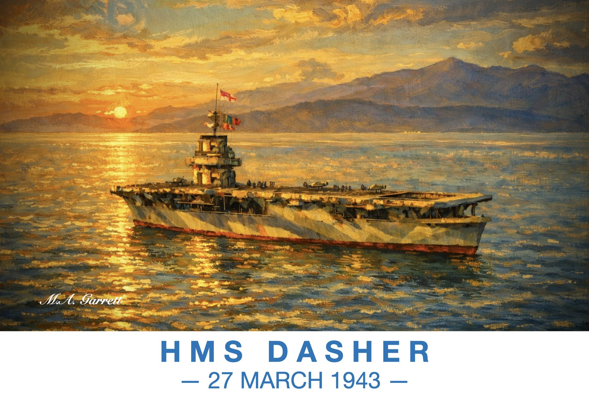

HMS Dasher, 27 March 1943
The escort carrier HMS Dasher in dazzle camouflage on golden evening water, remembering 27 March 1943, the day she was lost in the Firth of Clyde.
Paintings of the Ayrshire coast

The escort carrier HMS Dasher in dazzle camouflage on golden evening water, remembering 27 March 1943, the day she was lost in the Firth of Clyde.